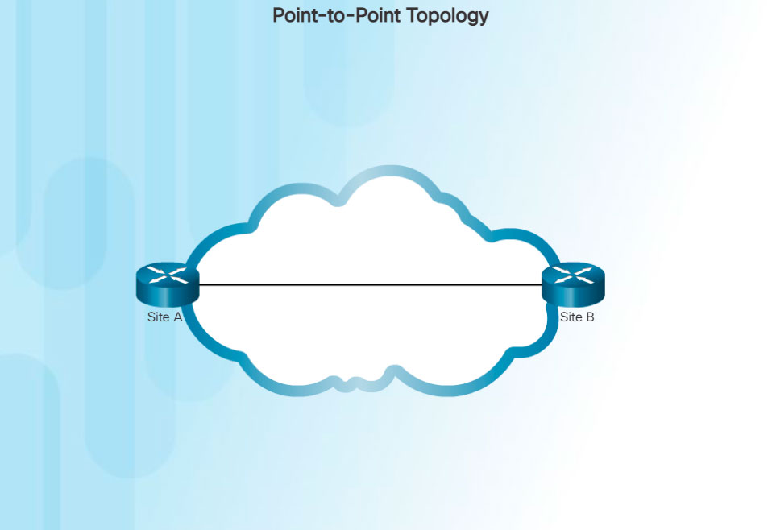
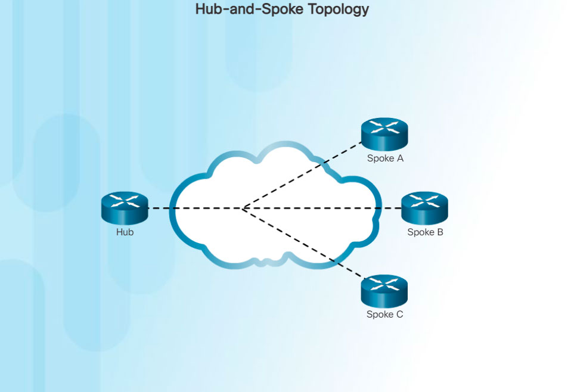
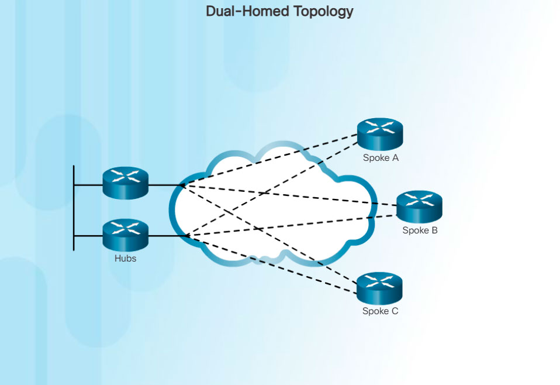

Interconnecting multiple sites across WANs can involve a variety of service provider technologies and WAN topologies. Common WAN topologies are:
Point-to-Point
A point-to-point topology, as shown in Figure 1,

employs a point-to-point circuit between two endpoints. Typically involving dedicated leased-line connections like T1/E1 lines, a point-to-point connection involves a Layer 2 transport service through the service provider network. Packets sent from one site are delivered to the other site and vice versa. A point-to-point connection is transparent to the customer network, as if there was a direct physical link between two endpoints.
Hub-and-Spoke
If a private network connection between multiple sites is required, then a point-to-point topology with multiple point-to-point circuits is one option. Each point-to-point circuit requires its own dedicated hardware interface which will require multiple routers with multiple WAN interface cards. This can be expensive. A less expensive option is a point-to-multipoint topology, also known as a hub and spoke topology.
With a hub-and-spoke topology a single interface to the hub can be shared by all spoke circuits. For example, spoke sites can be interconnected through the hub site using virtual circuits and routed subinterfaces at the hub. A hub-and-spoke topology is also an example of a single-homed topology. Figure 2 displays a sample hub-and-spoke topology consisting of four routers with one router as hub connected to the other three spoke routers across a WAN cloud.

Full Mesh
One of the disadvantages of hub-and-spoke topologies is that all communication has to go through the hub. With a full mesh topology using virtual circuits, any site can communicate directly with any other site. The disadvantage here is the large number of virtual circuits that need to be configured and maintained. Figure 3 displays a sample full mesh topology consisting of four routers connected to each other across a WAN cloud.
Dual-homed Topology
A dual-homed topology provides redundancy. As shown in Figure 4

two hub routers are dual-homed and redundantly attached to three spoke routers across a WAN cloud. The disadvantage to dual-homed topologies is that they are more expensive to implement than single-homed topologies. This is because they require additional networking hardware, like additional routers and switches. Dual-homed topologies are also more difficult to implement because they require additional, and more complex, configurations. However, the advantage of dual-homed topologies is that they offer enhanced network redundancy, load balancing, distributed computing or processing, and the ability to implement backup service provider connections.